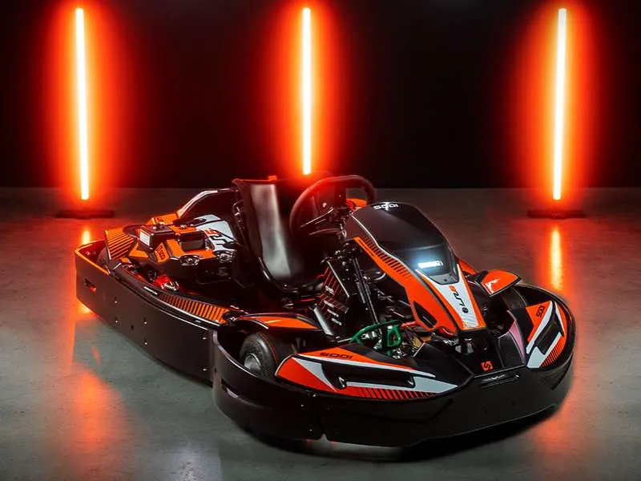
Les meilleurs karts de location du monde.
Onze modèles, du KidRacer de 3 ans au RSX2 électrique, conçus comme des outils de production : rouler plus d'heures, coûter moins en pièces, attirer plus de clients. Réservés aux exploitants de circuits.
Onze karts,
pour chaque piste.
Thermique Honda GX ou 100 % électrique ENGEC, de 3 ans à 2,10 m, en solo ou en biplace. Filtrez selon votre exploitation.
Adultes & pilotes confirmés
5 modèles · Honda GX 4 temps

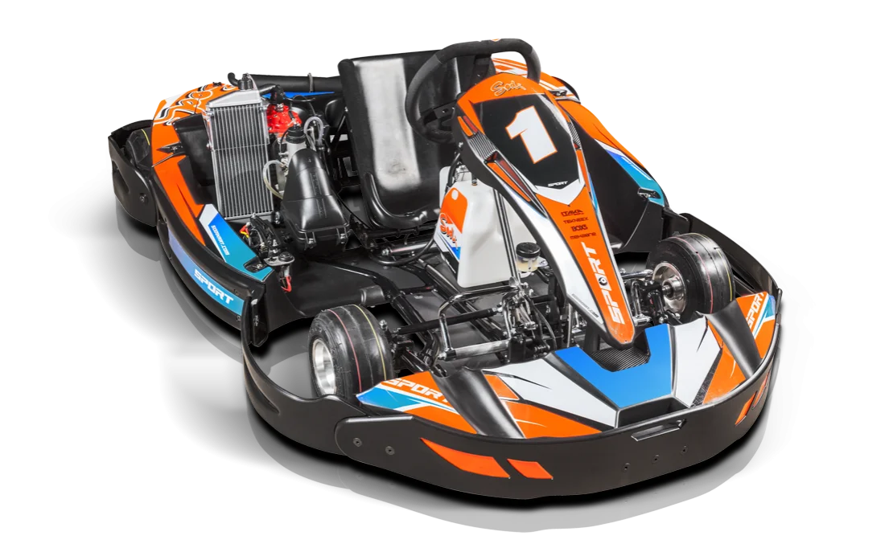
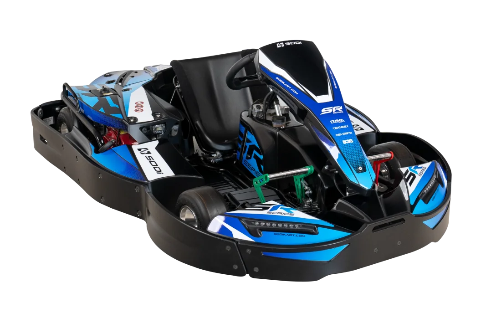
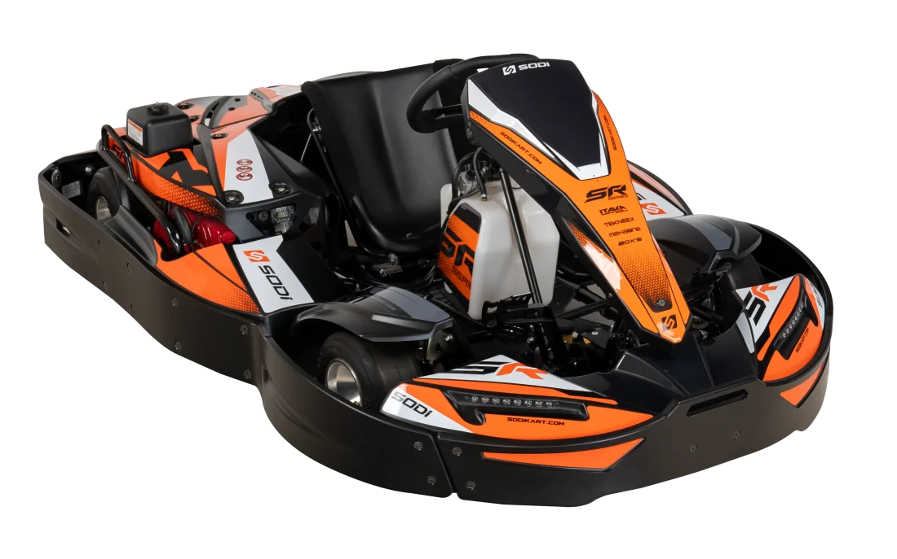

Juniors & kids
3 modèles · dès 3 ans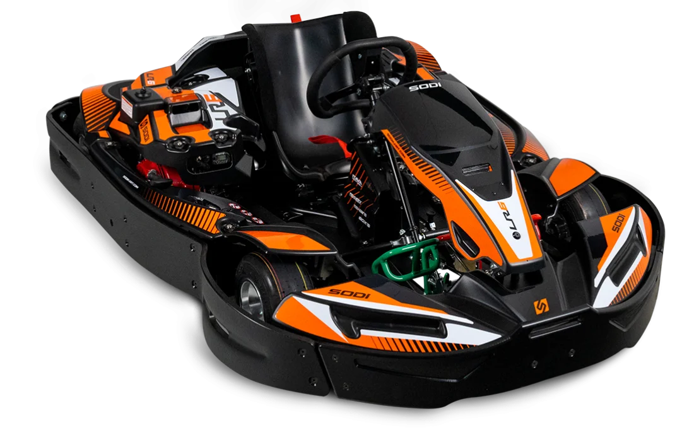
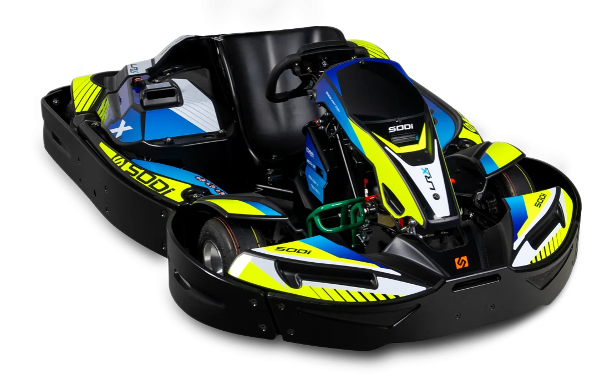
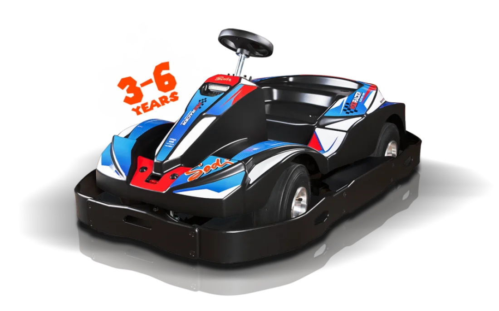
Biplaces
2 modèles · familles, apprentissage, PMR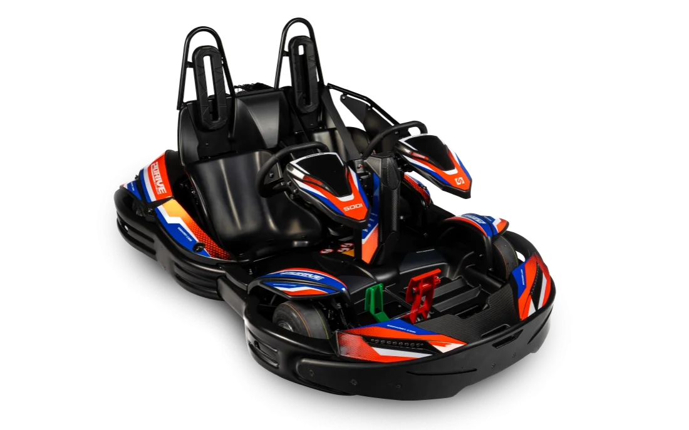
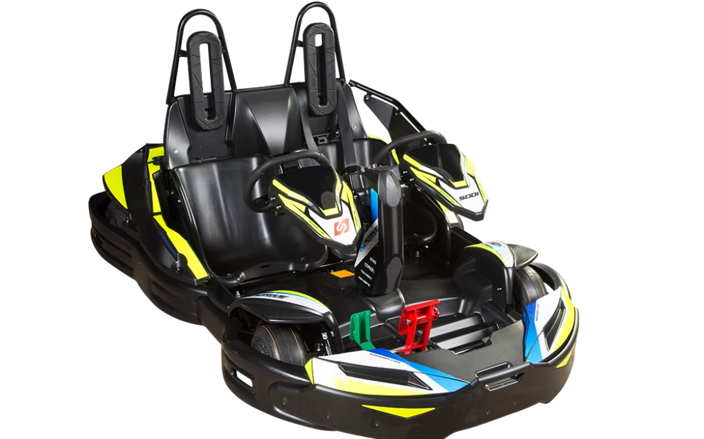
Réservés aux professionnels.
Les karts de location SODI sont exclusivement destinés à un usage professionnel. Particulier ? Rendez-vous chez un revendeur, sur ITAKAshop ou sur l'une des 760 pistes SWS.
Trouver une pisteLa référence des
karts électriques.
Moteur ENGEC conçu en interne depuis 2006, premier kart électrique Sodi en 2011, et aujourd'hui une gamme complète : RSX2 adulte, LRX2 junior, X2Drive biplace, KidRacer 3-6 ans. Les E-Finals des Sodi World Series roulent exclusivement sur RSX2 et LRX2.
Charge & verrouillage
Connexion sécurisée, impossible de démarrer en charge, gestion des cycles de batterie pour préserver sa durée de vie.
SODISCAN
Supervision de la flotte électrique en temps réel : niveau de charge, karts disponibles, rotation optimisée entre deux sessions.
APS · puissance ajustable
Adaptez la puissance au pilote et au format de session : initiation, famille ou sprint. Un seul kart, plusieurs expériences.
SR6.
Le kart nouvelle génération.
Le SR6 marque une nouvelle évolution de la gamme avec l'intégration de la technologie brevetée ERGOMAX®, une architecture ergonomique développée pour s'adapter naturellement à chaque pilote, de 1,40 m à 2,10 m.
| Motorisations | Honda GX200 · GX270 · GX390 4 temps |
|---|---|
| Pilotes | De 1,40 m à 2,10 m grâce au siège et au pédalier réglables ERGOMAX® |
| Longueur · largeur | 2 021 mm × 1 420 mm |
| Hauteur | 621 mm · avec arceau H1 927 mm · H2 1 016 mm |
| Poids | 157 kg (GX200) · 166 kg (GX270) · 172 kg (GX390) |
| Garde au sol | 41 mm |
| Carrosserie | Intégrale, spécialement conçue pour la location, protections périphériques |
| Normes | NF EN 16230-1+A1 · directive machines 2006/42/CE · règles techniques et de sécurité du karting FFSA |
| Traçabilité | Fiche identitaire propre à chaque kart, fabriqué à Saint-Herblain |
82 technologies.
Trois promesses.
Chaque option documentée répond à une question d'exploitant : mes clients sont-ils en sécurité, tous mes clients peuvent-ils rouler, mon kart rapporte-t-il plus qu'il ne coûte ?
Sécurité Protéger
- HEAD SYSTEM® anti-chevauchement Brevet 2009
- PROLINE® 360 protections périphériques Carrosserie
- PROSLIDE® RT10
- Carrosserie intégrale enveloppante Toute la gamme
- Capot d'arbre arrière Transmission
- Ceinture et volant passager 2 positions Biplaces
- Driving School & bouton parent KidRacer
- Crash-tests UTAC Première mondiale
Ergonomie Accueillir
- ERGOMAX® siège et pédalier réglables 1,40–2,10 m
- EASY DRIVE® direction précise Brevet
- Pédalier 3 positions · pédalier 2D SR4/SR5 · RT10
- Volant et nez type F1 RT10
- Nylon rods concept Confort
- Proflex châssis ajustable Sport
- Frein hydraulique 4 pistons Sport
- Siège enveloppant junior LR6 · LRX2
Exploitation Rentabiliser
- EMS équité des moteurs Moins de réclamations
- APS puissance ajustable Sessions modulables
- Compteurs d'heures Maintenance
- Version silencieuse · GPL Indoor · urbain
- SODISCAN supervision électrique Flotte
- Charge & verrouillage Électrique
- R-Display · Game of Karts Expérience
- My Studio 1 M+ de combinaisons Personnalisation
Premier constructeur
à crash-tester ses karts.
Avec l'UTAC, Sodikart a soumis ses karts de location aux mêmes méthodes d'essai que l'industrie automobile. Une première mondiale qui rassure vos assureurs, vos collectivités et surtout vos clients.
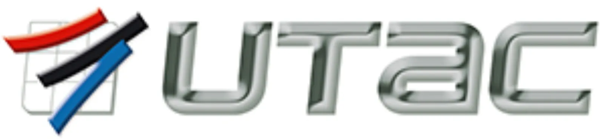
Crash-tests certifiés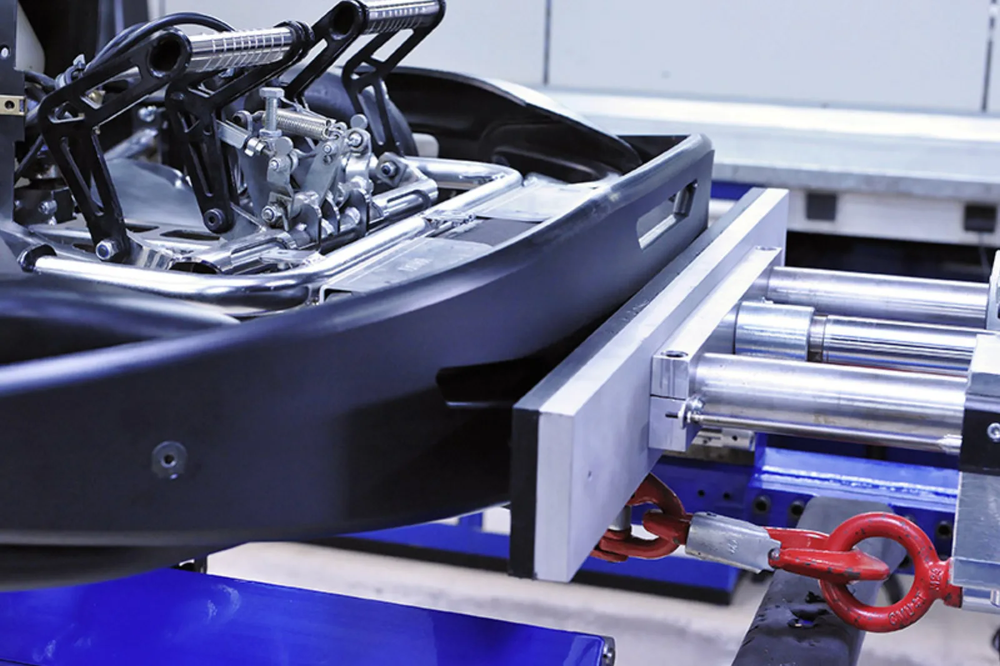
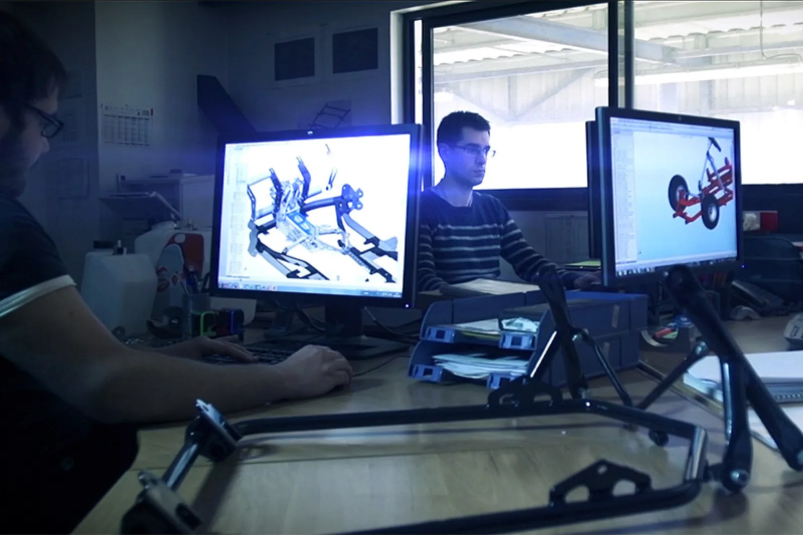
Trois karts,
côte à côte.
Choisissez jusqu'à trois modèles : motorisation, pilotes, poids, usage et signature technologique s'alignent automatiquement.
Données issues des fiches constructeur · prix et délais sur devis
My Studio.
Une flotte à vos couleurs.
Plus d'un million de combinaisons de couleurs pour la carrosserie, les protections et les jantes. Visualisez votre livrée, partagez-la, commandez-la : vos karts deviennent votre identité.
Aperçu de démonstration · le configurateur complet propose carrosserie, protections, jantes et stickers
Sodi Restart.
Un kart d'usine, une seconde vie.
Lancé en octobre 2024, Sodi Restart reconditionne en usine des karts de 27 modèles historiques (RT8, RX8, GT5, LR5…). Quatre niveaux de préparation, une traçabilité d'origine, un budget d'entrée maîtrisé pour démarrer ou compléter une flotte.
Serenity
- Contrôle complet en usine
- Organes de sécurité vérifiés
- Prêt à rouler
Comfort
- Serenity +
- Pièces d'usure remplacées
- Carrosserie reconditionnée
Premium
- Comfort +
- Moteur révisé
- Livrée My Studio
Prestige
- Premium +
- Remise à neuf intégrale
- Équipements dernière génération